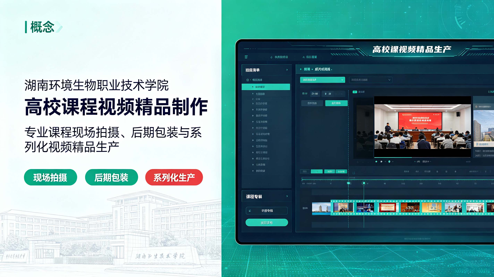

湖南环境生物职业技术学院《课程视频精品制作》
2026-02-12

围绕课程视频精品制作开展数字课程与内容建设，优化知识组织、视觉表达、拍摄制作及配套教。
本案例围绕“湖南环境生物职业技术学院《课程视频精品制作》”开展数字课程与教学内容建设。项目结合主题特点和实际使用场景，对内容结构、知识重点、呈现方式和资源需求进行梳理，并通过课程拍摄、后期剪辑、图文设计、动画包装或交互资源等方式完成数字化表达。建设过程中兼顾专业内容的准确传递、画面与声音质量、学习观看节奏和资源复用需求，使成果既能服务课堂教学与线上学习。